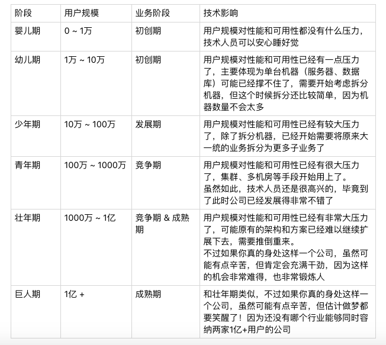

38-互联网技术演进的模式
互联网业务千差万别，但由于具备“规模决定一切”的特点，其发展一般分为4个时期：初创期、发展期、竞争期、成熟期。
不同时期的差别在于二个方面：复杂性、用户规模。
业务复杂性
互联网业务发展每一个主要方向就是“业务越来越复杂”，我们来看看不同时期业务的复杂性的表现：
初创期
互联网业务刚开始一般是一个创新的业务点，这个业务点的重点不在于“完善”，而在于“创新”，只有创新才能吸引用户。因为其“新”的特点，所以不可能是完善的。随着用户的不断增多，通过快速迭代试错，用户反馈的方式，不断在实践中完善，才能继续创新。
初创期的业务对技术的要求就是“快”，但这个时候团队又是最弱小的，所有此时：能买的就买，能用开源的就用开源的。
发展期
当业务推出后，经过市场验证是可行的，则吸引的用户会越来越多，此时原本不完善的业务就进入了一个快速发展期。此时的主要任务是把不完善的业务逐渐完善，因此会有越来越多的功能加入到系统中去。这个阶段技术的核心工作是快速的实现各种需求，只有这样才能满足业务的发展。
如何做到“快速”，一般会经历以下几个阶段：
堆功能期
业务进行发展期的初期，此时团队规模不太，但业务需求又紧，最快实现业务需求的方式就是继续在原有的系统不断增加新的功能，重构、优化、架构等方面的工作即便想做，也会受限于人力和业务发展的压力而放在一边。
优化期
随着功能越来越多，系统开始变得越来越复杂、后续继续推功能会越来越感到吃力，速度越来越慢。一种典型场景是：一个需求要改很多的地方，一不小心就改出了问题。
如何解决这个问题，一般分为二派：优化派、架构派。
优化派的核心思想是将现有的系统进行优化。如采用重构、分层、优化SQL，将机械盘换成固态盘，将MySQL换成Oracle，增加缓存等。优化派的优势在于对于系统的改动较小，优化可以比较快的实施。缺点是可能过不了多久，又开始撑不住了。
架构派的核心思想是调整系统架构，主要是将原来的大系统拆分成多个相互配合的小系统。架构派的优点在于一次调整可以支撑比较长的业务发展，缺点是运作较大，耗时较少，对业务发展影响也比较大。
大部分情况下，“优化”派会赢，主要还是因为在这个阶段“优化”是最快的方式，至于说“优化”支撑不了多久，这个不用考虑太多，因为业务能否发展到那个阶段还是个未知数，保证当下的竞争力是最主要问题。
架构期
经过优化期后，如果业务继续发展，慢慢发现优化也顶不住了，毕竟再怎么优化，系统的能力也是有限的。这个时候就需要“架构”派出马了。
架构期可用的手段很多，但归根结点还是一个字“拆”，什么地方都可以拆：
- 拆功能:大一统的系统拆成各子系统。
- 拆数据库：分库分表、读写分离等。
- 拆服务器：负载均衡，如HA、NGINX等。
竞争期
当业务继续发展，形成一定的规模后，一定会有竞争对手开始加入行业进行竞争。当竞争对手加入后，大家互相学习和模仿，业务更加完善，也不断会有新的业务加进来，而由于竞争的压力，对技术的要求是更上一层楼。
新业务的创新给技术带来的典型压力就是新的系统会越来越多，同时，原有的系统也会越拆的越来越多。两者合力的典型后果就是系统数量在原有的基础上又增加了很多。架构拆分后的好处又慢慢的消失，技术工作又开始进入“慢”的状态，为什么呢？
系统数量越来越多，到了一个临界点产生了质变，即系统数量的量变带来了技术工作的质变。
重复造轮子
系统越来越多，各系统相似的功能越来越多。
系统交互一团乱麻
系统越来越多，各系统的交互关系变成了网状。系统交互数量和系统的数量成平方比的关系。每实现一个业务需求，都需要几个甚至十几个系统一起修改，然后互相调用。联调成了开发人员的灾难、联测成了测试人员的灾难、部署成了运维的灾难。
针对这个阶段的问题，技术工作主要的解决方案有：
平台化
目的是解决“重复造轮子”的问题。
存储平台化：淘宝的TFS、京东的JFS。
数据库平台化：美团的DBProxy，淘宝的TDDL。
缓存平台化：Twitter的Twemproxy，豆瓣的beansdb,腾讯的ttc。
服务化
目的在于解决系统交互的问题，常见的作法是通过消息队列来完成系统间r的异步通知,通过服务框架来完成系统间的同步调用。
消息队列：activemq,kafka等
服务化框架：fackbook的thrift,当当网的dubbox等。
成熟期
企业熬过了竞争期，成为了行业的领头羊，或者整个行业整体上已经处于比较稳定的阶段，市场地位比较稳固，业务创新的机会已经不多，竞争也没那么激烈，此时求快求新已经没有很大的空间，业务开始转向求精:我们的响应时间是否比竞争对手短，用户体验是否比对手好，成本是否比对手低等。
此时的技术也进入成熟期，该拆的也拆了，该平台化的也平台化了，技术上能够做的大动作已经不多了，更多的是优化。但有时候为了一个优化，系统做出很大的改变。这时候的技术优化没有固定的套路，只能根据竞争的要求，找出自己的弱项，然后逐项优化。
用户规模
互联网业务发展的第二个方向是“用户量越来越大”。
用户量增大对于技术的影响主要是：性能要求越来越高，可用性要求越来越高。
性能
用户增长给技术带来的第一个挑战是性能要求越来越高，以mysql为例，单台MySQL机器支撑的TPS和QPS最高也就是万级，低的可能是几千，再高也不过几万。当用户量增大后，必然要考虑到用多台MySQL。从原来的集中式存储变成分布式存储。
分布式将带来复杂度大幅上升。例如：MySQL要考虑分库分表、读写分离、复制、同步等问题。
可用性
用户增长给技术带来的第一个挑战是可用性要求越来越高。用户少的时候宕机一个小时也没有很大的影响。但当有100万用户时，宕机10分钟,投诉电话就被打爆了，口碑就会变差。
除了口碑的影响，可用性对收入的影响也会随着用户的增加而增大。1万用户宕机1小时可能只损失几千元，100万用户时，宕机10分钟损失可能就有几十万。
量变到质变
互联网业务驱动业务发展的两大因素是复杂性和用户规模,而这二个因素的本质都是“量变到质变”。
多少用户会引起质变呢，可以参照下图：

应对业务质变带来的压力，不同时期有不同的处理方式，但不管什么样的方式，其核心目标都是为了满足业务“快”的要求，当发现业务快不起来的时候，其实技术水平已经跟不上业务发展的需要了，技术变革和发展的时候就到了。更好的作法是在问题还没有暴露出来的时候根据趋势预测下一个转折点，提前做好技术上的准备，这对技术人员的要求是非常高的。